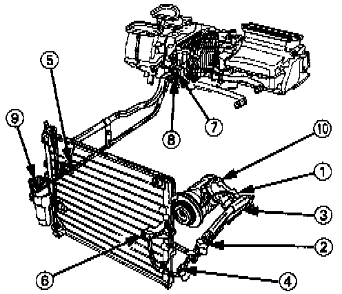

A/C System Service Precautions
A/C SERVICE TIPS1. Always disconnect the negative cable from the battery whenever replacing air conditioner parts.
2. Keep moisture and dust out of the system. When disconnecting any lines, plug or cap the fittings immediately; don't remove the caps or plugs until just before you reconnect each line.
3. Before connecting any hose or line, apply a few drops of refrigerant oil to the 0-ring.
4. When tightening or loosening a fitting, use a second wrench to support the matching fitting.
5. When discharging the system, use a refrigerant recovery system; don't release refrigerant into the atmosphere.
6. Add refrigerant oil after replacing the following parts:
Condenser: 30 cc (1/2 fl oz)
Evaporator: 60 cc (2 fl oz)
Line or hose: 10 cc (1/3 fl oz)
Receiver: 10 cc (1/3 fl oz)
Compressor: On compressor replacement, subtract the volume of oil drained from the removed compressor from 100 cc (3 fl oz), and drain the calculated volume of oil from the new compressor: 100 cc (3 fl oz) minus the volume of oil from the removed compressor=Volume to drain from new compressor.

SYSTEM TORQUE VALUES
Don't overtighten fittings; you could damage them. Leaks are caused by faulty 0-rings; overtightening won't stop them. Refer to image for component references listed below.
1. Suction hose at the compressor 29 Nm (2.9 kg-m, 21 lb-ft)
2. Suction hose and suction line 9 Nm (0.9 kg-m, 6.5 lb-ft)
3. Discharge hose at the compressor 29 Nm (2.9 kg-m, 21 lb-ft)
4. Discharge hose to the discharge line 9 Nm (0.9 kg-m, 6.5 lb-ft)
5. Suction line to suction line 10 Nm (1.0 kg-m, 7.2 lb-ft)
6. Discharge hose at the condenser 29 Nm (2.9 kg-m, 21 lb-ft)
7. Suction line at the heater unit 10 Nm (1.0 kg-m, 7.2 lb-ft)
8. Receiver line at the heater unit 10 Nm (1.0 kg-m, 7.2 lb-ft)
9. Receiver line at the receiver/dryer 10 Nm (1.0 kg-m, 7.2 lb-ft)
10. Compressor mounting bolts 25 Nm (2.5 kg-m, 18 lb-ft)